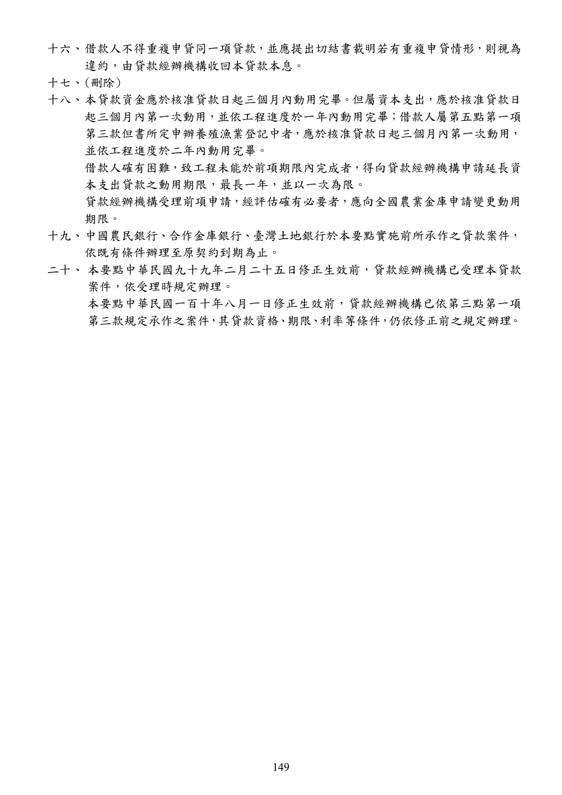
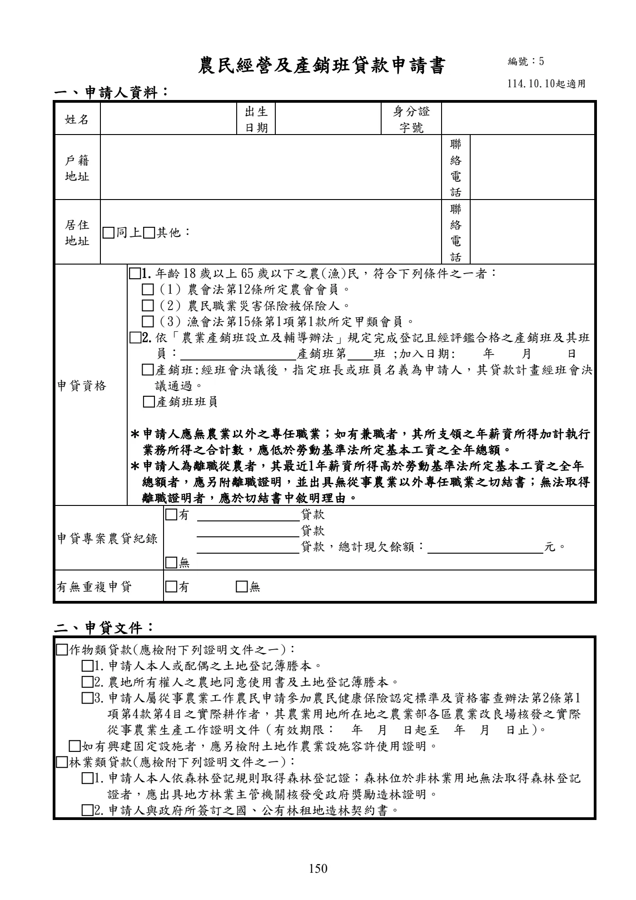
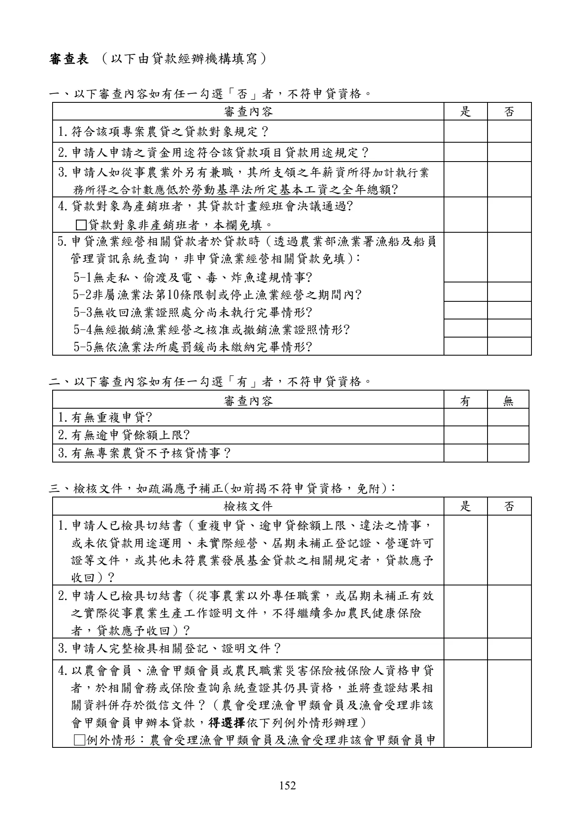
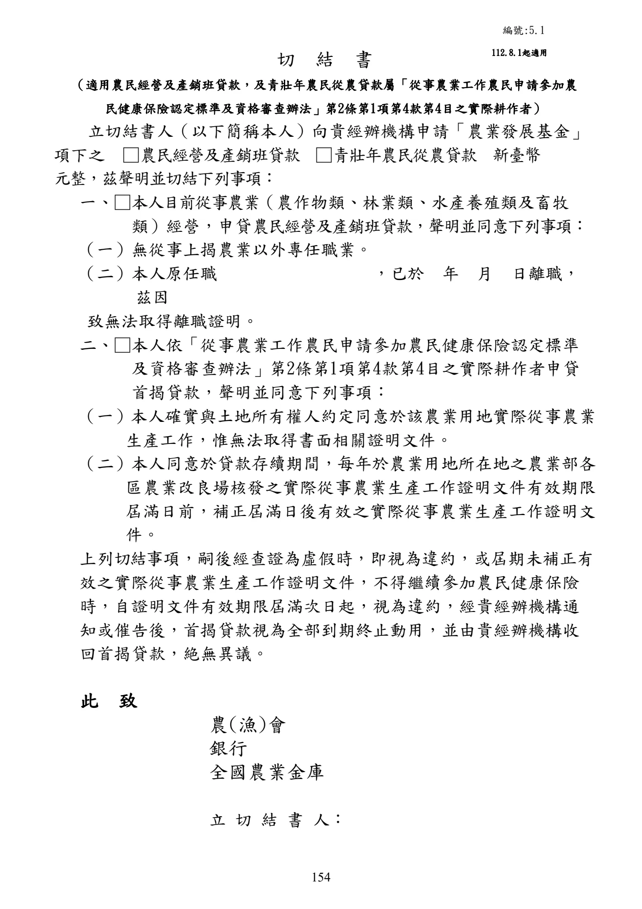
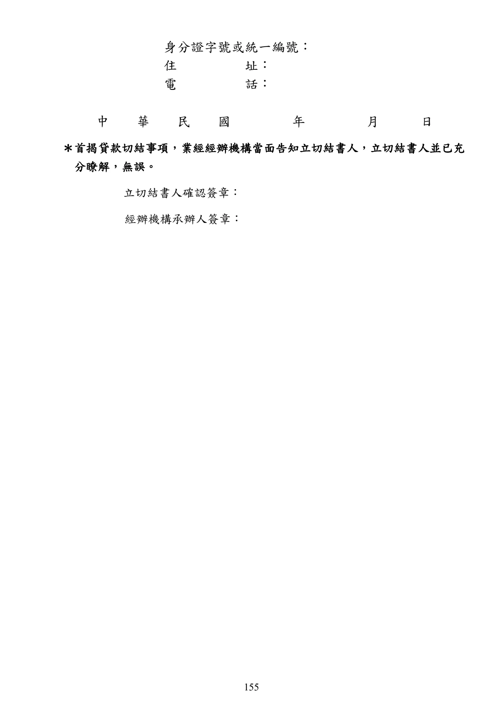

農民經營及產銷班貸款
本頁忠實呈現原文，不提供資格摘要、額度摘要、利率摘要或核貸判斷。
手冊頁：146 PDF頁：148／359
農民經營及產銷班貸款要點中華民國 94 年 12 月 30 日行政院農業委員會農授金字第 0945080617 號令訂定中華民國 95 年 12 月 14 日行政院農業委員會農金字第 0955080448 號令修正中華民國 98 年 5 月 6 日行政院農業委員會農金字第 0985080222 號令修正中華民國 99 年 2 月 25 日行政院農業委員會農金字第 0995080084 號令修正中華民國 101 年 10 月 4 日行政院農業委員會農金字第 1015080476 號令修正發布第 3、12 點規定；並自即日生效中華民國 102 年 4 月 26 日行政院農業委員會農金字第 1025080171 號令修正中華民國 103 年 2 月 28 日行政院農業委員會農金字第 1035080091 號令修正中華民國 103 年 10 月 28 日行政院農業委員會農金字第 1035084018 號令修正中華民國 105 年 3 月 18 日行政院農業委員會農金字第 1055084023A 號令修正部分規定，並自 105 年 3 月 22 日生效中華民國108 年11 月22 日行政院農業委員會農金字第 1085084745E 號令修正部分規定，並自 108 年 11 月 25 日生效中華民國109 年2 月27 日行政院農業委員會農授金字第 1085084100D 號令修正第11 點、第 14 點，並自 109 年 3 月1 日生效中華民國 109 年 10 月 21 日行政院農業委員會農授金字第 1095085177D 號令修正第 11點、第 12 點、第 14 點，並自 109 年 11 月 1 日生效中華民國 110 年 7 月 29 日行政院農業委員會農授金字第 1105084731D 號令修正第 3 點、第 20 點，並自 110 年 8 月1 日生效中華民國 111 年 9 月 29 日行政院農業委員會農授金字第 1115085078B 號令修正第 3 點，並自 111 年 10 月1 日生效中華民國 112 年 12 月 12 日農業部農授金字第 1125085576 號令修正發布部分規定，並自113 年 1 月1 日生效中華民國 114 年 10 月 9 日農業部農授金字第 1147467205 號令修正第 5 點、第18 點，並自中華民國 114 年 10 月 10 日生效
一、農業部為鼓勵從事農、林、漁、牧業農民生產經營，加強輔導其經營所需資金，以提升農民農業經營競爭力，提高農業所得，改善生活，促進農村社會之安定與農村經濟繁榮，特訂定本要點。
二、農民經營及產銷班貸款除依辦理政策性農業專案貸款辦法辦理外，依本要點規定辦理。本要點未規定者，依農業發展基金貸款作業規範及其他有關規定辦理。
三、本貸款之對象如下：
(一)年齡十八歲以上六十五歲以下之農(漁)民，符合下列條件之一者：
1.農會法第十二條所定農會會員。
2.農民職業災害保險被保險人。
3.漁會法第十五條第一項第一款所定甲類會員。
(二)依農業產銷班設立及輔導辦法規定完成登記且經評鑑合格之產銷班或其班員。貸款對象為產銷班者，應經班會決議後，指定班長或班員以其名義為借款人；其貸款計畫(包括貸款用途、額度及期間等事項)亦應經班會決議通過。
查看PDF原始文字層
農民經營及產銷班貸款要點 中華民國 94 年 12 月 30 日行政院農業委員會農授金字第 0945080617 號令訂定 中華民國 95 年 12 月 14 日行政院農業委員會農金字第 0955080448 號令修正 中華民國 98 年 5 月 6 日行政院農業委員會農金字第 0985080222 號令修正 中華民國 99 年 2 月 25 日行政院農業委員會農金字第 0995080084 號令修正 中華民國 101 年 10 月 4 日行政院農業委員會農金字第 1015080476 號令修正發布第 3、 12 點規定；並自即日生效 中華民國 102 年 4 月 26 日行政院農業委員會農金字第 1025080171 號令修正 中華民國 103 年 2 月 28 日行政院農業委員會農金字第 1035080091 號令修正 中華民國 103 年 10 月 28 日行政院農業委員會農金字第 1035084018 號令修正 中華民國 105 年 3 月 18 日行政院農業委員會農金字第 1055084023A 號令修正部分規定， 並自 105 年 3 月 22 日生效 中華民國108 年11 月22 日行政院農業委員會農金字第 1085084745E 號令修正部分規定 ， 並自 108 年 11 月 25 日生效 中華民國109 年2 月27 日行政院農業委員會農授金字第 1085084100D 號令修正第11 點、 第 14 點，並自 109 年 3 月1 日生效 中華民國 109 年 10 月 21 日行政院農業委員會農授金字第 1095085177D 號令修正第 11 點、第 12 點、第 14 點，並自 109 年 11 月 1 日生效 中華民國 110 年 7 月 29 日行政院農業委員會農授金字第 1105084731D 號令修正第 3 點、 第 20 點，並自 110 年 8 月1 日生效 中華民國 111 年 9 月 29 日行政院農業委員會農授金字第 1115085078B 號令修正第 3 點， 並自 111 年 10 月1 日生效 中華民國 112 年 12 月 12 日農業部農授金字第 1125085576 號令修正發布部分規定，並自 113 年 1 月1 日生效 中華民國 114 年 10 月 9 日農業部農授金字第 1147467205 號令修正第 5 點、第18 點，並 自中華民國 114 年 10 月 10 日生效 一、 農業部為鼓勵從事農、林、漁、牧業農民生產經營，加強輔導其經營所需資金，以提 升農民農業經營競爭力，提高農業所得，改善生活，促進農村社會之安定與農村經濟 繁榮，特訂定本要點。 二、 農民經營及產銷班貸款除依辦理政策性農業專案貸款辦法辦理外，依本要點規定辦 理。本要點未規定者，依農業發展基金貸款作業規範及其他有關規定辦理。 三、 本貸款之對象如下： (一)年齡十八歲以上六十五歲以下之農(漁)民，符合下列條件之一者： 1.農會法第十二條所定農會會員。 2.農民職業災害保險被保險人。 3.漁會法第十五條第一項第一款所定甲類會員。 (二)依農業產銷班設立及輔導辦法規定完成登記且經評鑑合格之產銷班或其班員 。 貸 款對象為產銷班者，應經班會決議後，指定班長或班員以其名義為借款人；其貸 款計畫(包括貸款用途、額度及期間等事項)亦應經班會決議通過。
手冊頁：147 PDF頁：149／359

展開查看PDF原始文字層
借款人為前項第一款農(漁)民或第二款產銷班班員者 ， 應無農業以外之專任職業 ； 如
有兼職者 ， 其所支領之年薪資所得加計執行業務所得之合計數應低於勞動基準法所定
基本工資之全年總額。
四、 本貸款用途如下：
(一) 從事農作物類、 林業類 、 水產養殖類及畜牧類等生產 、農產運銷等資本支出及週
轉金。
(二) 購買農地金額每人不得超過申借本貸款金額的四分之ㄧ，並以所購農地辦理設
定抵押。但產銷班購地所需資金非在本貸款核貸用途之列。
前點第一項第二款借款人之貸款資金用途應與借款人所屬產銷班登記之產業類別相
關。
第一項第一款所稱農產運銷 ， 指農業發展條例第三條第十七款規定之農產品之集貨 、
選別、分級、包裝、儲存、冷凍(藏)、加工處理、檢驗、運輸及交易等各項作業。
五、 借款人應填具貸款申請書 ， 並檢附國民身分證影本 、 向稅捐稽徵機關申請之本人最近
一年度所得清單、申貸資格佐證資料及下列相關文件，向貸款經辦機構提出申請：
(一)申請作物類貸款者，應檢附下列證明文件之一，如有興建固定設施者，應另檢
附土地作農業設施容許使用證明：
1.借款人本人或配偶之土地登記簿謄本。
2.農地所有權人之農地同意使用書、土地登記簿謄本。
3.借款人屬從事農業工作農民申請參加農民健康保險認定標準及資格審查辦法
第二條第一項第四款第四目之實際耕作者，其農業用地所在地之農業部各區
農業改良場核發之實際從事農業生產工作證明文件。
(二)申請林業類貸款者，應檢附下列證明文件之一，如為興建林業設施者，應另檢附
土地作林業設施容許使用證明(由直轄市、縣(市)政府出具公函證明)：
1.借款人本人依森林登記規則取得森林登記證；森林位於非林業用地無法取得
森林登記證者，應出具地方林業主管機關核發受政府獎勵造林證明。
2.借款人與政府所簽訂之國、公有林租地造林契約書。
3.借款人出具之林產物國產來源證明文件。
(三)申請養殖類貸款者 ， 應附借款人之養殖漁業登記證、 區劃漁業權執照 、專用漁業
權入漁證明文件或其他依法令許可之養殖證明文件。但屬申辦養殖漁業登記中
者，應檢附主管機關核准興建水產養殖設施之農業用地作農業設施容許使用同
意書。
(四)申請畜牧類貸款者 ， 應檢具本人 、配偶 、 父母或祖父母名義之土地作畜牧設施同
意使用證明或畜牧場登記證書，如貸款項目為乳牛應另檢附收乳證明。
(五)申請農產運銷貸款者 ，如有興建固定設施 ，屬農業用地者， 應檢附農業設施容許
使用同意書及建築執照 ， 但依法免申請建築執照者免附； 非屬農業用地者 ，應檢
附建築執照。如與農民有契作關係者，應檢附契作合約書。
借款人為離職從農者 ， 其最近一年薪資所得高於勞動基準法所定基本工資之全年總額
者，應另檢附離職證明，並出具無從事農業以外專任職業之切結書；無法取得離職證
明者，應於切結書中敘明理由。
第一項第三款但書借款人 ， 僅得申貸資本支出貸款 ， 並應於撥貸後三年內補正養殖漁
業登記證。屆期未補正者，視為未符合貸款資格，應收回其貸款，貸款經辦機構已請手冊頁：148 PDF頁：150／359
領之利息差額補貼應繳還農業部。
六、本貸款經辦機構如下：
(一) 設有信用部之農(漁)會。
(二) 依法承受農(漁)會信用部之銀行當地分行。
(三) 全國農業金庫。
七、本貸款之輔導機關為農業部及其所屬農業試驗改良場(所)、直轄市及各縣(市)政府。
八、本貸款由貸款經辦機構提供貸款資金，並由農業發展基金就其出資金給予利息差額補貼。
九、本貸款風險由貸款經辦機構負擔。
十、本貸款利率依辦理政策性農業專案貸款辦法相關規定辦理。
十一、本貸款期限依貸款額度及購置設備耐用年限覈實貸放，其中資本支出最長十年，週轉金最長五年。
前項資本支出指購買農、林、漁、牧之生產設備、農產運銷設備、興修建畜禽舍及農產運銷設施、整建漁塭設施、購買農地等長期性資金；週轉金指農、林、漁、牧之生產、農產運銷經營期間經常需要循環運用資金，如用於購買畜、禽及其飼料、農產加工原料、購買農藥、肥料、包裝紙箱及果實套袋等資金。
十二、本貸款除第二項規定外，額度如下：
(一) 農(漁)民及產銷班班員：每一借款人最高貸款額度為新臺幣二百五十萬元，其中週轉金最高貸款額度為新臺幣一百萬元。但申請農產運銷貸款且與農民有契作關係者，週轉金最高為新臺幣一百二十萬元。
(二) 產銷班：每一借款人最高貸款額度為新臺幣一千萬元，其中週轉金最高貸款額度為新臺幣一百五十萬元。
本貸款對象為取得優良農產品標章（CAS）或產銷履歷農產品驗證證書者，貸款額度如下：
(一) 農(漁)民及產銷班班員：每一借款人最高貸款額度為新臺幣三百五十萬元，其中週轉金最高貸款額度為新臺幣一百二十萬元。
(二) 產銷班：每一借款人最高貸款額度為新臺幣一千二百萬元，其中週轉金最高貸款額度為新臺幣二百五十萬元。
十三、本貸款由貸款經辦機構按核定所需金額一次或分次撥付；其屬資本支出者，借款人應檢具相關憑證。
十四、本貸款償還方式如下：
(一) 資本支出：
1.本金以每半年一期平均攤還為原則，利息隨同繳付。
2.本金得酌訂寬緩期限，最長不得超過三年。
(二) 週轉金：
1.本金以每半年一期平均攤還為原則，利息隨同繳付。
2.本金得酌訂寬緩期限，最長不得超過二年。
前項本息攤還方式得由借貸雙方以契約另定之。但不得超過農業部所訂定之最長期限。
十五、本貸款擔保方式由貸款經辦機構依其授信有關規定，審酌個別授信案件核定；若借款人擔保能力不足，貸款經辦機構應協助送請農業信用保證機構保證。
查看PDF原始文字層
領之利息差額補貼應繳還農業部。
六、 本貸款經辦機構如下：
(一) 設有信用部之農(漁)會。
(二) 依法承受農(漁)會信用部之銀行當地分行。
(三) 全國農業金庫。
七、 本貸款之輔導機關為農業部及其所屬農業試驗改良場(所)、 直轄市及各縣(市)政府 。
八、 本貸款由貸款經辦機構提供貸款資金 ， 並由農業發展基金就其出資金給予利息差額補
貼。
九、 本貸款風險由貸款經辦機構負擔。
十、 本貸款利率依辦理政策性農業專案貸款辦法相關規定辦理。
十一、 本貸款期限依貸款額度及購置設備耐用年限覈實貸放，其中資本支出最長十年，週
轉金最長五年。
前項資本支出指購買農、林、漁、牧之生產設備、農產運銷設備、興修建畜禽舍及
農產運銷設施、整建漁塭設施、購買農地等長期性資金；週轉金指農、林、漁、牧
之生產、農產運銷經營期間經常需要循環運用資金，如用於購買畜、禽及其飼料、
農產加工原料、購買農藥、肥料、包裝紙箱及果實套袋等資金。
十二、 本貸款除第二項規定外，額度如下：
(一) 農(漁)民及產銷班班員：每一借款人最高貸款額度為新臺幣二百五十萬元，其
中週轉金最高貸款額度為新臺幣一百萬元 。 但申請農產運銷貸款且與農民有契
作關係者，週轉金最高為新臺幣一百二十萬元。
(二) 產銷班：每一借款人最高貸款額度為新臺幣一千萬元，其中週轉金最高貸款額
度為新臺幣一百五十萬元。
本貸款對象為取得優良農產品標章 （CAS） 或產銷履歷農產品驗證證書者 ， 貸款額度
如下：
(一) 農(漁)民及產銷班班員：每一借款人最高貸款額度為新臺幣三百五十萬元，其
中週轉金最高貸款額度為新臺幣一百二十萬元。
(二) 產銷班：每一借款人最高貸款額度為新臺幣一千二百萬元，其中週轉金最高貸
款額度為新臺幣二百五十萬元。
十三、 本貸款由貸款經辦機構按核定所需金額一次或分次撥付；其屬資本支出者，借款人
應檢具相關憑證。
十四、 本貸款償還方式如下：
(一) 資本支出：
1.本金以每半年一期平均攤還為原則，利息隨同繳付。
2.本金得酌訂寬緩期限，最長不得超過三年。
(二) 週轉金：
1.本金以每半年一期平均攤還為原則，利息隨同繳付。
2.本金得酌訂寬緩期限，最長不得超過二年。
前項本息攤還方式得由借貸雙方以契約另定之 。 但不得超過農業部所訂定之最長期
限。
十五、 本貸款擔保方式由貸款經辦機構依其授信有關規定，審酌個別授信案件核定；若借
款人擔保能力不足，貸款經辦機構應協助送請農業信用保證機構保證。手冊頁：149 PDF頁：151／359
{kind=link}

展開查看PDF原始文字層
十六、 借款人不得重複申貸同一項貸款，並應提出切結書載明若有重複申貸情形，則視為 違約，由貸款經辦機構收回本貸款本息。 十七、 (刪除) 十八、 本貸款資金應於核准貸款日起三個月內動用完畢。但屬資本支出，應於核准貸款日 起三個月內第一次動用，並依工程進度於一年內動用完畢；借款人屬第五點第一項 第三款但書所定申辦養殖漁業登記中者 ， 應於核准貸款日起三個月內第一次動用 ， 並依工程進度於二年內動用完畢。 借款人確有困難，致工程未能於前項期限內完成者，得向貸款經辦機構申請延長資 本支出貸款之動用期限，最長一年，並以一次為限。 貸款經辦機構受理前項申請，經評估確有必要者，應向全國農業金庫申請變更動用 期限。 十九、 中國農民銀行、合作金庫銀行、臺灣土地銀行於本要點實施前所承作之貸款案件， 依既有條件辦理至原契約到期為止。 二十、 本要點中華民國九十九年二月二十五日修正生效前，貸款經辦機構已受理本貸款 案件，依受理時規定辦理。 本要點中華民國一百十年八月一日修正生效前，貸款經辦機構已依第三點第一項 第三款規定承作之案件 ， 其貸款資格 、 期限 、 利率等條件 ， 仍依修正前之規定辦理 。
手冊頁：150 PDF頁：152／359
{kind=link}

展開查看PDF原始文字層
編號：5
114.10.10起適用
農民經營及產銷班貸款申請書
一、申請人資料：
姓名 出生
日期
身分證
字號
戶籍
地址
聯
絡
電
話
居住
地址 □同上□其他：
聯
絡
電
話
申貸資格
□1.年齡 18 歲以上 65 歲以下之農(漁)民，符合下列條件之一者：
□（1）農會法第12條所定農會會員。
□（2）農民職業災害保險被保險人。
□（3）漁會法第15條第1項第1款所定甲類會員。
□2.依「農業產銷班設立及輔導辦法」規定完成登記且經評鑑合格之產銷班及其班
員： 產銷班第 班 ;加入日期: 年 月 日
□產銷班:經班會決議後，指定班長或班員名義為申請人，其貸款計畫經班會決
議通過。
□產銷班班員
＊申請人應無農業以外之專任職業；如有兼職者，其所支領之年薪資所得加計執行
業務所得之合計數，應低於勞動基準法所定基本工資之全年總額。
＊申請人為離職從農者，其最近1年薪資所得高於勞動基準法所定基本工資之全年
總額者，應另附離職證明，並出具無從事農業以外專任職業之切結書；無法取得
離職證明者，應於切結書中敘明理由。
申貸專案農貸紀錄
□有 貸款
貸款
貸款，總計現欠餘額： 元。
□無
有無重複申貸 □有 □無
二、申貸文件：
□作物類貸款(應檢附下列證明文件之一)：
□1.申請人本人或配偶之土地登記簿謄本。
□2.農地所有權人之農地同意使用書及土地登記簿謄本。
□3.申請人屬從事農業工作農民申請參加農民健康保險認定標準及資格審查辦法第2條第1
項第4款第4目之實際耕作者，其農業用地所在地之農業部各區農業改良場核發之實際
從事農業生產工作證明文件（有效期限： 年 月 日起至 年 月 日止） 。
□如有興建固定設施者，應另檢附土地作農業設施容許使用證明。
□林業類貸款(應檢附下列證明文件之一)：
□1.申請人本人依森林登記規則取得森林登記證；森林位於非林業用地無法取得森林登記
證者，應出具地方林業主管機關核發受政府獎勵造林證明。
□2.申請人與政府所簽訂之國、公有林租地造林契約書。手冊頁：151 PDF頁：153／359
□3.申請人出具之林產物國產來源證明文件。
□如為興建林業設施者，應另檢附土地作林業設施容許使用證明(由直轄市、縣（市）政府出具公函證明)。
□養殖類貸款:申請人之□養殖漁業登記證(□申辦養殖漁業登記中者，應檢附申請人本人之主管機關核准興建水產養殖設施之農業用地作農業設施容許使用同意書)、□區劃漁業權執照、□專用漁業權入漁證明文件或□其他依法令許可之養殖證明文件。
＊借款人為申辦養殖漁業登記中者，僅得申貸資本支出貸款，並應於撥貸後3年內補正養殖漁業登記證，屆期未能補正者，視為未符合貸款資格，應收回貸款，貸款經辦機構已請領之利息差額補貼應繳還農業部。
□畜牧類貸款：申請人本人、配偶、父母或祖父母名義之□土地作畜牧設施同意使用證明或□畜牧場登記證書，如貸款項目為乳牛應另檢附□收乳證明。
□農產運銷貸款:(如蜂農，屬申請此類貸款)□興建固定設施者：□1.屬農業用地者，應檢附農業設施容許使用同意書及建築執照（□依法免申請建築執照者免附）。
□2.非屬農業用地者，應檢附建築執照。
□與農民有契作關係者，應檢附契作合約書。
三、貸款金額及用途：單位：新臺幣元貸款金額(大寫) 新臺幣元整貸款期間資本支出年週轉金年貸款用途
□資本支出：金額_____________________□週轉金：金額_____________________＊本人知悉貸後資本支出應檢附足具證據力之相關憑證(如統一發票、收據等)，以佐證貸款用途。
＊購買農地金額每人不得超過申借本貸款金額的四分之ㄧ，並以所購農地辦理設定抵押。
＊產銷班購地所需資金非在本貸款核貸用途之列。
＊產銷班或其班員申貸本貸款，其貸款資金用途應與所屬產銷班登記之產業類別相關。
申請人(簽章)：_____________________敬請惠予核貸為荷此致貸款經辦機構申請人(簽章)：中華民國年月日
備註：其他徵授信資料請依貸款經辦機構相關規定辦理。
查看PDF原始文字層
□3.申請人出具之林產物國產來源證明文件。
□如為興建林業設施者，應另檢附土地作林業設施容許使用證明(由直轄市、縣（市）政府出
具公函證明)。
□養殖類貸款:申請人之□養殖漁業登記證(□申辦養殖漁業登記中者，應檢附申請人本人之主
管機關核准興建水產養殖設施之農業用地作農業設施容許使用同意書)、□區劃
漁業權執照、□專用漁業權入漁證明文件或□其他依法令許可之養殖證明文件。
＊借款人為申辦養殖漁業登記中者，僅得申貸資本支出貸款，並應於撥貸後3年內補正養殖漁
業登記證，屆期未能補正者，視為未符合貸款資格，應收回貸款，貸款經辦機構已請領之利
息差額補貼應繳還農業部。
□畜牧類貸款：申請人本人、配偶、父母或祖父母名義之□土地作畜牧設施同意使用證明或□
畜牧場登記證書，如貸款項目為乳牛應另檢附□收乳證明。
□農產運銷貸款:(如蜂農，屬申請此類貸款)
□興建固定設施者：□1.屬農業用地者，應檢附農業設施容許使用同意書及建築執照
（□依法免申請建築執照者免附）。
□2.非屬農業用地者，應檢附建築執照。
□與農民有契作關係者，應檢附契作合約書。
三、貸款金額及用途： 單位：新臺幣元
貸款金額
(大寫) 新臺幣 元整 貸款期間 資本支出 年
週 轉 金 年
貸款用途
□資本支出： 金額_____________________
□週 轉 金： 金額_____________________
＊本人知悉貸後資本支出應檢附足具證據力之相關憑證(如統一發票 、 收據等)，
以佐證貸款用途。
＊購買農地金額每人不得超過申借本貸款金額的四分之ㄧ，並以所購農地辦理
設定抵押。
＊產銷班購地所需資金非在本貸款核貸用途之列。
＊產銷班或其班員申貸 本貸款，其貸款資金用途應與所屬產銷班登記之產業類
別相關。
申請人(簽章)：_____________________
敬請
惠予核貸為荷
此致
貸款經辦機構
申請人(簽章)：
中 華 民 國 年 月 日
備註：其他徵授信資料請依貸款經辦機構相關規定辦理。手冊頁：152 PDF頁：154／359
{kind=link}

展開查看PDF原始文字層
審查表 （以下由貸款經辦機構填寫） 一、以下審查內容如有任一勾選「否」者，不符申貸資格。 審查內容 是 否 1.符合該項專案農貸之貸款對象規定？ 2.申請人申請之資金用途符合該貸款項目貸款用途規定？ 3.申請人如從事農業外另有兼職，其所支領之年薪資所得加計執行業 務所得之合計數應低於勞動基準法所定基本工資之全年總額? 4.貸款對象為產銷班者，其貸款計畫經班會決議通過? □貸款對象非產銷班者，本欄免填。 5.申貸漁業經營相關貸款者於貸款時（透過農業部漁業署漁船及船員 管理資訊系統查詢，非申貸漁業經營相關貸款免填） ： 5-1無走私、偷渡及電、毒、炸魚違規情事? 5-2非屬漁業法第10條限制或停止漁業經營之期間內? 5-3無收回漁業證照處分尚未執行完畢情形? 5-4無經撤銷漁業經營之核准或撤銷漁業證照情形? 5-5無依漁業法所處罰鍰尚未繳納完畢情形? 二、以下審查內容如有任一勾選「有」者，不符申貸資格。 審查內容 有 無 1.有無重複申貸? 2.有無逾申貸餘額上限? 3.有無專案農貸不予核貸情事？ 三、檢核文件，如疏漏應予補正(如前揭不符申貸資格，免附)： 檢核文件 是 否 1.申請人已檢具切結書（重複申貸、逾申貸餘額上限、違法之情事， 或未依貸款用途運用、未實際經營、屆期未補正登記證、營運許可 證等文件，或其他未符農業發展基金貸款之相關規定者，貸款應予 收回）? 2.申請人已檢具切結書（從事農業以外專任職業，或屆期未補正有效 之實際從事農業生產工作證明文件，不得繼續參加農民健康保險 者，貸款應予收回）? 3.申請人完整檢具相關登記、證明文件？ 4.以農會會員、漁會甲類會員或農民職業災害保險被保險人資格申貸 者，於相關會務或保險查詢系統查證其仍具資格，並將查證結果相 關資料併存於徵信文件？（農會受理漁會甲類會員及漁會受理非該 會甲類會員申辦本貸款，得選擇依下列例外情形辦理） □例外情形：農會受理漁會甲類會員及漁會受理非該會甲類會員申
手冊頁：153 PDF頁：155／359
辦本貸款，已同時檢具下列證件佐證：
(1)漁會甲類會員證。
(2)申貸當月之「區漁會勞保薪資異動繳費清單」或向勞工保險局查調之「勞工保險異動查詢資料」（投保單位名稱須為區漁會且保險證號前3碼須為030）。
*撥貸後6個月內，農（漁）會須再向借款人徵提下列證件之一，屆期未補正，或資料顯示借款人不具甲類會員資格，應收回其貸款，農（漁）會已請領之利息差額補貼應繳還農業部：
(1)撥貸後1至6個月間查調之「勞工保險異動查詢資料」，比對借款人是否仍具甲類會員資格。
(2)借款人會員資格所屬漁會核發之甲類會員資格證明。
5.以產銷班及其班員資格申貸者，最近一次產銷班評鑑是否合格，並將查證資料併存於徵信文件？
審查結果：□符合，審查合格者不代表准予核貸，尚須依徵授信程序審查，並經授信審議委員會審議。
□不符，說明:
經辦人員覆核主任、襄(副)理總幹事、經理
註：以上簽章人員請註明日期。
查看PDF原始文字層
辦本貸款，已同時檢具下列證件佐證： (1)漁會甲類會員證。 (2)申貸當月之「區漁會勞保薪資異動繳費清單」或向勞工保險 局查調之「勞工保險異動查詢資料」 （投保單位名稱須為區 漁會且保險證號前3碼須為030）。 *撥貸後6個月內，農（漁）會須再向借款人徵提下列證件之 一，屆期未補正，或資料顯示借款人不具甲類會員資格，應收 回其貸款，農（漁）會已請領之利息差額補貼應繳還農業部： (1)撥貸後1至6個月間查調之「勞工保險異動查詢資料」 ，比對 借款人是否仍具甲類會員資格。 (2)借款人會員資格所屬漁會核發之甲類會員資格證明。 5.以產銷班及其班員資格申貸者，最近一次產銷班評鑑是否合格，並 將查證資料併存於徵信文件？ 審查結果：□符合，審查合格者不代表准予核貸，尚須依徵授信程序審查，並經 授信審議委員會審議。 □不符，說明: 經辦人員 覆核 主任、襄(副)理 總幹事、經理 註：以上簽章人員請註明日期。
手冊頁：154 PDF頁：156／359
{kind=link}

展開查看PDF原始文字層
編號:5.1 112.8.1起適用 切 結 書 （適用農民經營及產銷班貸款，及青壯年農民從農貸款屬「從事農業工作農民申請參加農 民健康保險認定標準及資格審查辦法」第2條第1項第4款第4目之實際耕作者） 立切結書人（以下簡稱本人）向貴經辦機構申請「農業發展基金」 項下之 □農民經營及產銷班貸款 □青壯年農民從農貸款 新臺幣 元整，茲聲明並切結下列事項： 一、□本人目前從事農業（農作物類、林業類、水產養殖類及畜牧 類）經營，申貸農民經營及產銷班貸款，聲明並同意下列事項： （一）無從事上揭農業以外專任職業。 （二）本人原任職 ，已於 年 月 日離職， 茲因 致無法取得離職證明。 二、□本人依「從事農業工作農民申請參加農民健康保險認定標準 及資格審查辦法」第2條第1項第4款第4目之實際耕作者申貸 首揭貸款，聲明並同意下列事項： （一）本人確實與土地所有權人約定同意於該農業用地實際從事農業 生產工作，惟無法取得書面相關證明文件。 （二）本人同意於貸款存續期間，每年於農業用地所在地之農業部各 區農業改良場核發之實際從事農業生產工作證明文件有效期限 屆滿日前，補正屆滿日後有效之實際從事農業生產工作證明文 件。 上列切結事項，嗣後經查證為虛假時，即視為違約，或屆期未補正有 效之實際從事農業生產工作證明文件，不得繼續參加農民健康保險 時，自證明文件有效期限屆滿次日起，視為違約，經貴經辦機構通 知或催告後，首揭貸款視為全部到期終止動用，並由貴經辦機構收 回首揭貸款，絶無異議。 此 致 農(漁)會 銀行 全國農業金庫 立 切 結 書 人：
手冊頁：155 PDF頁：157／359
{kind=link}

展開查看PDF原始文字層
身分證字號或統一編號： 住 址： 電 話： 中 華 民 國 年 月 日 ＊首揭貸款切結事項，業經經辦機構當面告知立切結書人，立切結書人並已充 分瞭解，無誤。 立切結書人確認簽章： 經辦機構承辦人簽章：
手冊頁：156 PDF頁：158／359
函令摘要：釋示農民經營改善貸款有關興建固定設施應取得土地作農業設施容許使用證明之規定【行政院農業委員會101年5月30日 農授金字第1015080242號函】主旨：所詢農用固定設施興建於自宅或建地上而無法取得土地作農業設施容許使用證明，可否申貸「農民經營改善貸款」1案，復如說明，請查照。
說明：
一、依據本會農業金融局案陳貴會101年5月3日○○字第1010001376號函辦理。
二、依「農民經營改善貸款要點」第5 點第 1 項第 1 款規定，有關作物類貸款如有興建固定設施者，應另附土地作農業設施容許使用證明，旨在確保農地農用之合法性；興建固定設施未能取得該證明者，不符前開貸款規定。
函令摘要：釋示「農民經營改善貸款」及「青年從農創業貸款」所稱「農業以外專任職業」之認定事宜【行政院農業委員會102年12月19日 農授金字第1025080614號函】主旨：有關「農民經營改善貸款」及「青年從農創業貸款」所稱「農業以外專任職業」之認定事宜，詳如說明，請查照。
說明：
一、依現行「辦理政策性農業專案貸款辦法」第7條第2項及第17條第2項規定，「農民經營改善貸款」及「青年從農創業貸款」之借款人應無「農業以外專任職業」；如有兼職者，其所支領之年薪資所得應低於勞動基準法所定基本工資之全年總額。
二、前開2項貸款係以年齡限制為申貸資格條件，又資金用途相較其他政策性農業專案貸款廣泛，為確保該2項貸款支應主要從事農業工作者，爰對借款人任職情形有所限制。
三、近來部分貸款經辦機構對於前揭專任職業之認定常有疑義，為協助經辦人員易於認定，避免違反規定，爰表列常見專任職業（如附件）供其參考。貴機構對未列入表內之職業如有認定疑義，仍得來文詢問。
四、至前開2項貸款以外之其他政策性農業專案貸款，借款人資格條件仍依各該貸款規定辦理。
【備註：「青年從農創業貸款」自103年10月28日修正，放寬從農青年如有農業以外之兼職工作，只要貸款存續期間，所支領從事農業以外其他職業之年薪資所得加計執行業務所得之合計數低於勞動基準法所定基本工資之全年總額即可】
查看PDF原始文字層
函令摘要：釋示農民經營改善貸款有關興建固定設施應取得土地作農業 設施容許使用證明之規定 【行政院農業委員會101年5月30日 農授金字第1015080242號函】 主旨： 所詢農用固定設施興建於自宅或建地上而無法取得土地作農業設施容許使用證明 ， 可否申貸「農民經營改善貸款」1案，復如說明，請查照。 說明： 一、依據本會農業金融局案陳貴會101年5月3日○○字第1010001376號函辦理。 二、依「農民經營改善貸款要點」第5 點第 1 項第 1 款規定，有關作物類貸款如有興建固 定設施者，應另附土地作農業設施容許使用證明，旨在確保農地農用之合法性；興建 固定設施未能取得該證明者，不符前開貸款規定。 函令摘要：釋示 「農民經營改善貸款」 及「青年從農創業貸款」 所稱「農 業以外專任職業」之認定事宜 【行政院農業委員會102年12月19日 農授金字第1025080614號函】 主旨：有關「農民經營改善貸款」及「青年從農創業貸款」所稱「農業以外專任職業」之 認定事宜，詳如說明，請查照。 說明： 一、 依現行「辦理政策性農業專案貸款辦法」第7條第2項及第17條第2項規定，「農民經 營改善貸款」及「青年從農創業貸款」之借款人應無「農業以外專任職業」；如有兼 職者，其所支領之年薪資所得應低於勞動基準法所定基本工資之全年總額。 二、 前開2項貸款係以年齡限制為申貸資格條件，又資金用途相較其他政策性農業專案貸 款廣泛 ， 為確保該2項貸款支應主要從事農業工作者 ， 爰對借款人任職情形有所限制 。 三、 近來部分貸款經辦機構對於前揭專任職業之認定常有疑義 ， 為協助經辦人員易於認定 ， 避免違反規定，爰表列常見專任職業（如附件）供其參考。貴機構對未列入表內之職 業如有認定疑義，仍得來文詢問。 四、 至前開2項貸款以外之其他政策性農業專案貸款，借款人資格條件仍依各該貸款規定 辦理。 【備註：「青年從農創業貸款」自103年10月28日修正，放寬從農青年如有農業以外之兼 職工作，只要貸款存續期間，所支領從事農業以外其他職業之年薪資所得加計 執行業務所得之合計數低於勞動基準法所定基本工資之全年總額即可】
手冊頁：157 PDF頁：159／359
【附件】「農民經營改善貸款」及「青壯年農民從農貸款」所稱「農業以外專任職業」之認定表
1 (1) 現職軍、警及公務人員；公、私立各級學校教職人員。
(2) 政府機關以契約進用並按月支領固定工作報酬之全職職員。
2 公、民營事業、財團法人、社團法人(含農會、漁會）或農田水利會之正式職員。
3 (1) 財團或社團法人之理事長、秘書長、經理人。
(2) 有限公司之董事、經理人及股份有限公司之董事長、經理人；無限公司及兩合公司之執行業務或代表公司之股東、經理人。
(3)商號或行號之負責人或合夥人、經理人。
4 律師、會計師、建築師、代書(地政士)、藥師、中(西)醫師、獸醫師、醫事檢驗師、精算師、記帳士、公證人、不動產估價師等執行業務者。
查看PDF原始文字層
【附件】 「農民經營改善貸款」及「青壯年農民從農貸款」 所稱「農業以外專任職業」之認定表 1 (1) 現職軍、警及公務人員；公、私立各級學校教職人員。 (2) 政府機關以契約進用並按月支領固定工作報酬之全職職 員。 2 公、民營事業、財團法人、社團法人(含農會、漁會）或農田 水利會之正式職員。 3 (1) 財團或社團法人之理事長、秘書長、經理人。 (2) 有限公司之董事、經理人及股份有限公司之董事長、經理 人；無限公司及兩合公司之執行業務或代表公司之股東、經 理人。 (3)商號或行號之負責人或合夥人、經理人。 4 律師、會計師、建築師、代書(地政士)、藥師、中(西)醫師、 獸醫師、醫事檢驗師、精算師、記帳士、公證人、不動產估價 師等執行業務者。